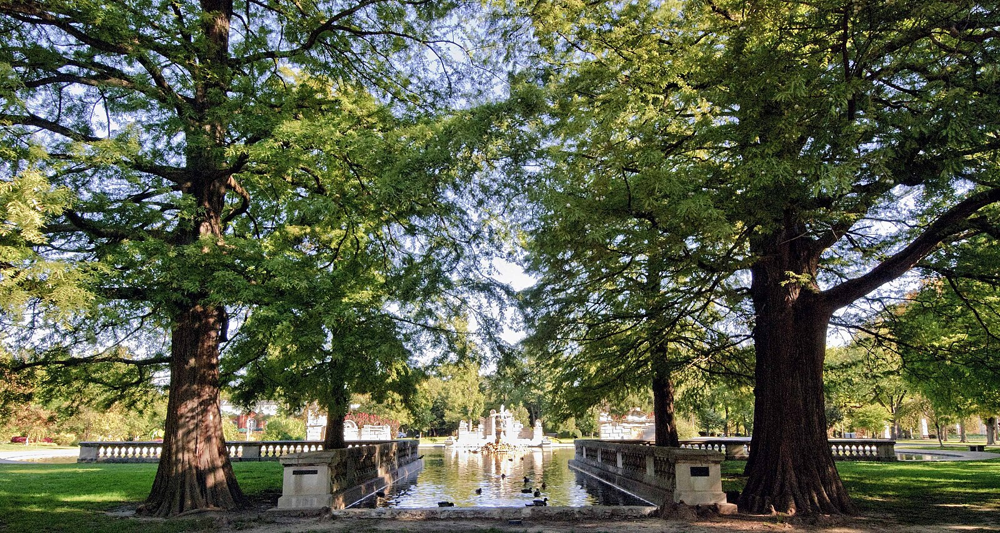
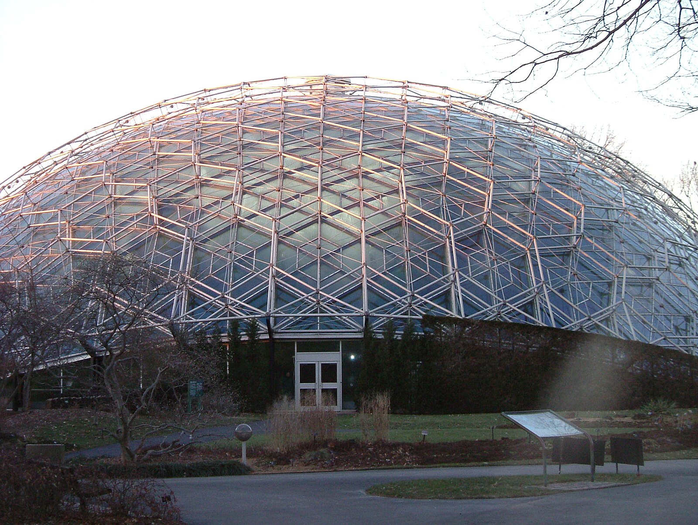
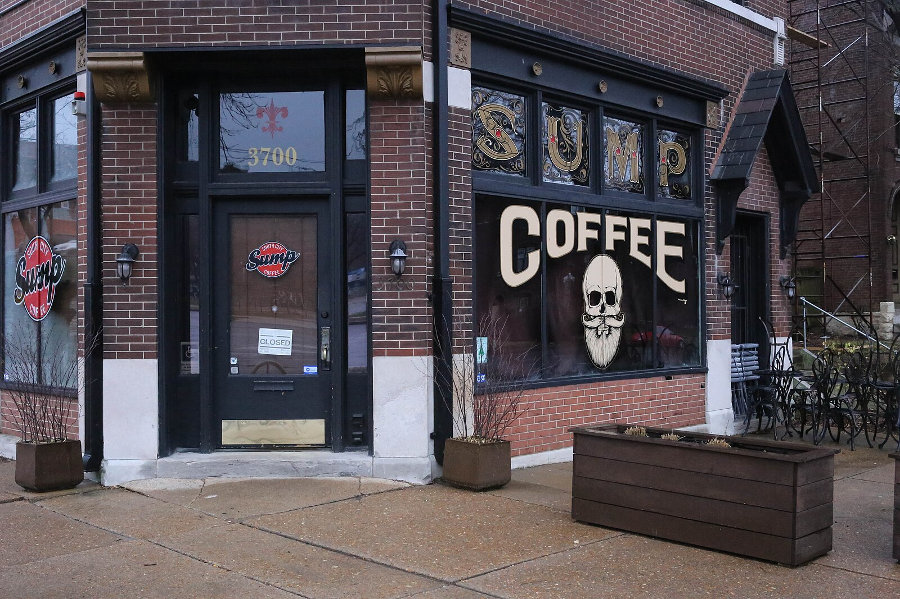
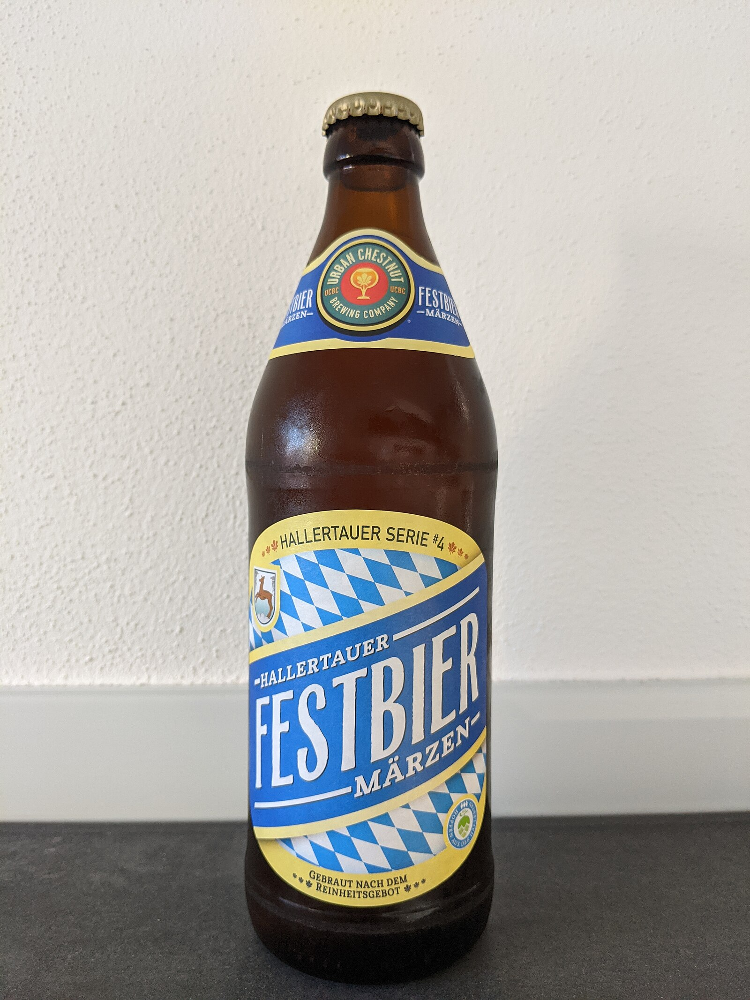
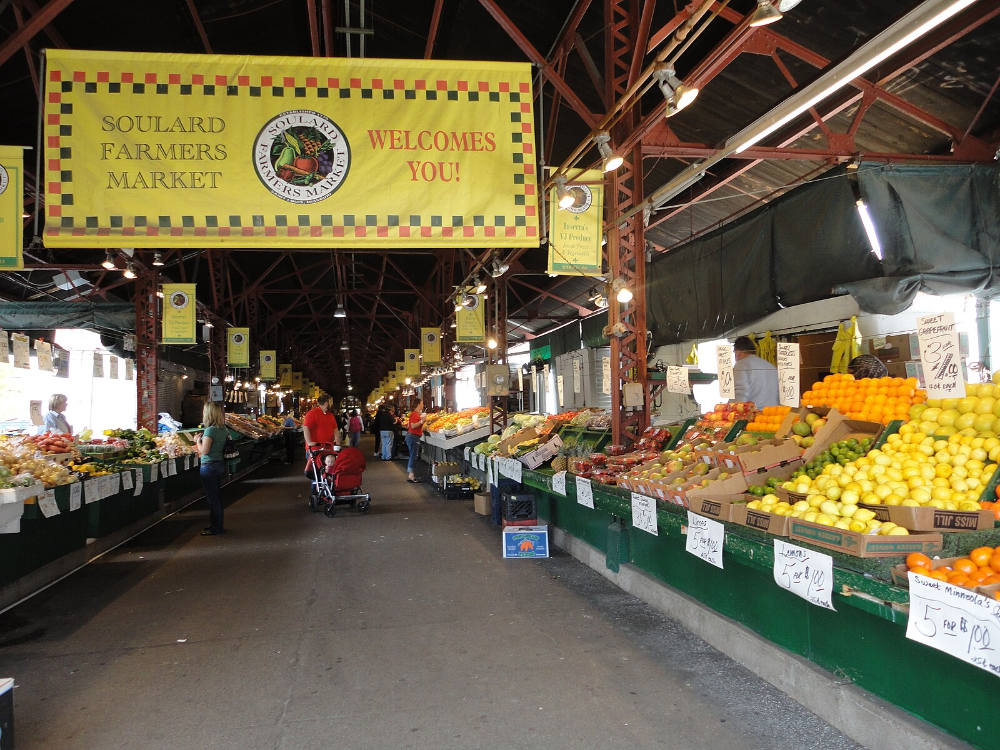
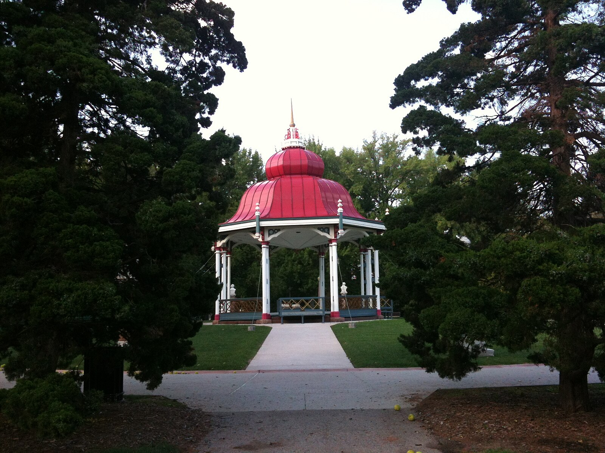
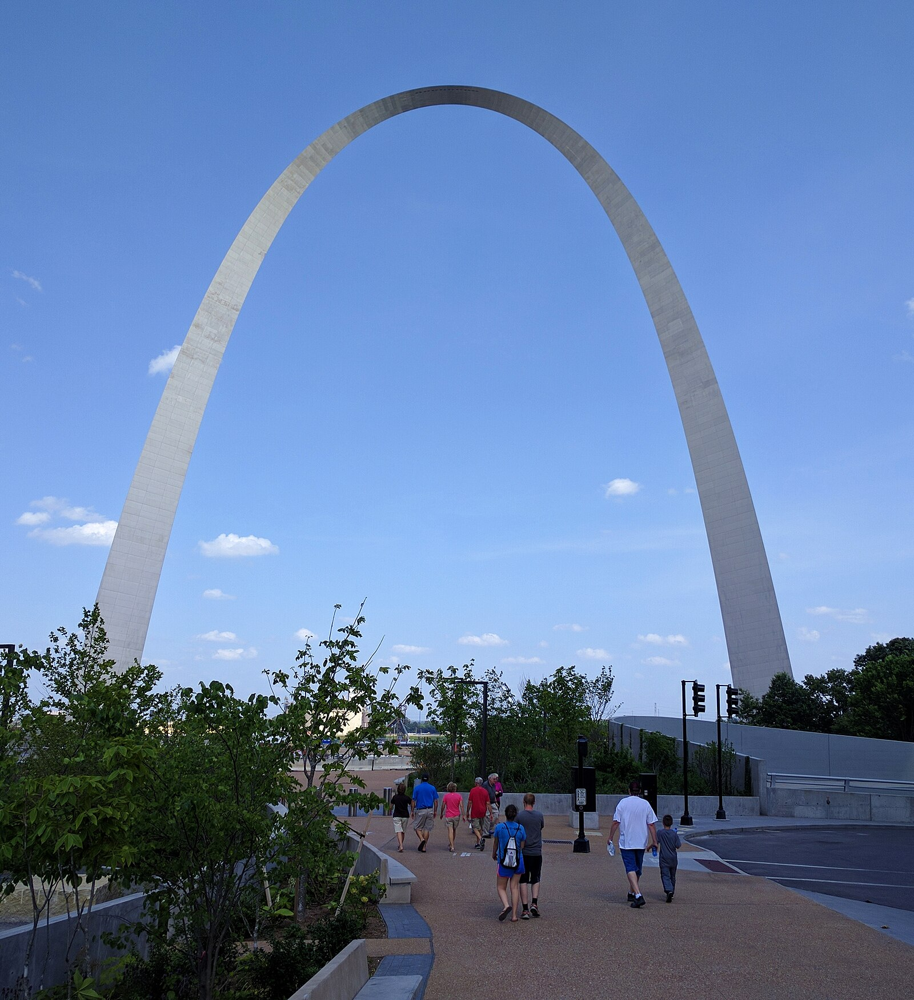
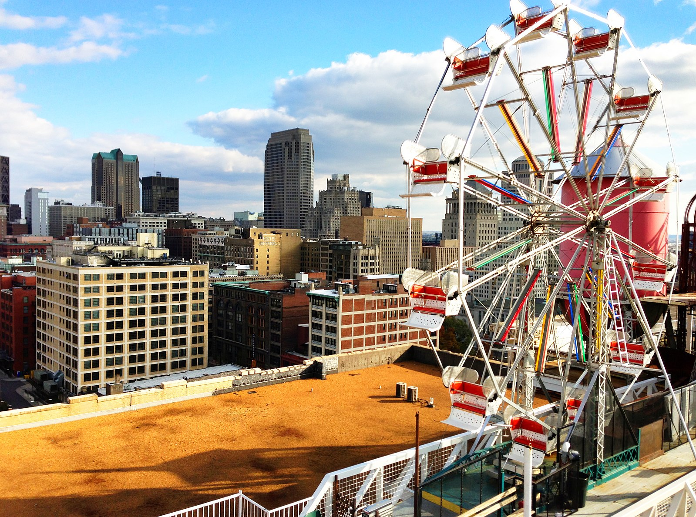
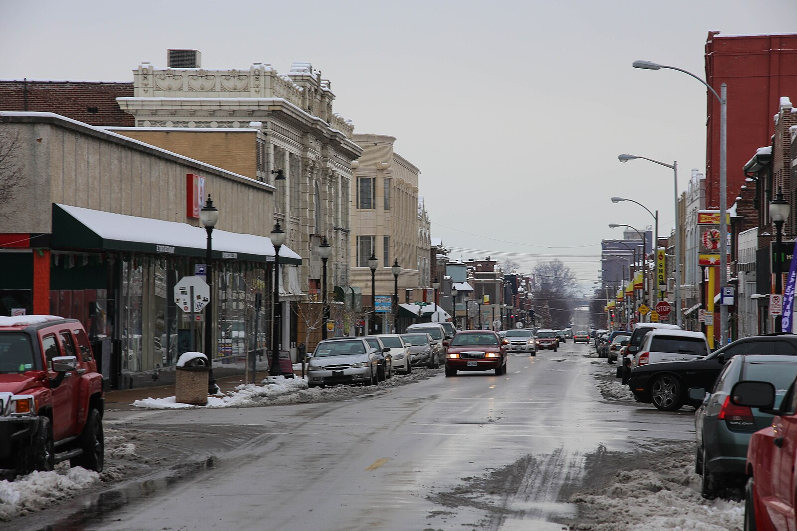

One of St. Louis's most walkable, restaurant-rich neighborhoods. Here's our curated guide to help you explore like a local.
Tower Grove South is one of St. Louis's most walkable and loved neighborhoods. Most of the picks below are within a short walk — the rest are a quick 5–10 minute drive.
Community-focused breakfast & lunch with locally-sourced ingredients. Recently named #5 on Yelp's Top 100 Places to Eat in the Midwest.
Literally next door — full bar, outdoor seating, burgers, and live music on weekends. Back open after a brief hiatus.
One block south on Morganford. Creative sandwiches, fresh salads, and great coffee.
Cor blimey guv'na! — grab a handle of award winning beer in this comfortable brew pub.
Wood-fired Neapolitan pizza at Hartford & Morganford — a neighborhood favorite.
Two blocks north — 289 acres of trails, pavilions, and a Saturday farmers market (spring–fall).
Hand-cut steaks and decadent housemade cakes — a date-night favorite.
Specialty third-wave coffee on S. Jefferson — a St. Louis institution.
International grocery on South Grand with an incredible spice and specialty selection.
Historic 289-acre park with trails, pavilions, and a Saturday farmers market.

World-class 79-acre garden minutes away.
Larger than NYC's Central Park. Home to the Zoo, Art Museum, Science Center and History Museum — all free.
Locally-sourced breakfast & lunch. #5 on Yelp's Top 100 Places to Eat in the Midwest. ⭐
Asian-inspired street food with creative cocktails.
Asian-fusion bowls and wraps — always a line, always worth it.
Wood-fired Neapolitan pizza at Hartford & Morganford.
Southern comfort food — rotating mains and classic sides.
Tex-Mex breakfast and brunch — try the huevos rancheros.

Specialty third-wave coffee in a minimalist space.
Neighborhood staple with great espresso and a welcoming vibe.
Beloved community coffeehouse on South Grand.

German-style craft brewery with a beer hall and biergarten.
Cor blimey guv'na! — grab a handle of award winning beer in this comfortable brew pub.
Laid-back neighborhood bar with cheap drinks and pinball.
Dive bar and music venue — live shows and cheap beer.
Artisan ice cream — try the brambleberry crisp.
Scratch-made pastries and cakes with local ingredients.
Full-service grocery, under 5 minutes by car.
Saturday mornings in Tower Grove Park (seasonal).

Open-air market operating since 1779 — produce, meats, spices, crafts.
International grocery on South Grand with an incredible spice and specialty selection.
Intimate concert hall with jazz, classical, and eclectic performances.
America's oldest outdoor musical theater — summer season in Forest Park.

Free summer concerts at the historic Victorian bandstand.

Iconic 630-ft monument — tram rides to the top and a museum below.

Wildly creative art-and-architecture playground for all ages.
Free world-class art museum in Forest Park.
One of the nation's best zoos — and it's free.

Eclectic arts corridor with Mexican bakeries, vintage shops, and incredible tacos.
Pharmacy and essentials on South Grand Blvd.
Major hospital and ER, ~15 minutes north.
St. Louis is famously a city of neighborhoods — 79 of them, each with its own identity, history, and charm. The tradition dates back to the 19th century, when waves of German, Irish, Italian, and Bosnian immigrants settled in distinct enclaves, building tight-knit communities with their own churches, corner bars, and bakeries. That patchwork character endures today: you can drive ten minutes and feel like you've crossed into a completely different city.
Central West End (CWE)
Upscale, walkable, European flair
Tree-lined streets with sidewalk cafés, boutique shopping, and some of the city's best dining.
Don't miss: Brasserie, Herbie's, Left Bank Books, Euclid Avenue
The Delmar Loop
Eclectic, artsy, energetic
A legendary six-block strip packed with restaurants, record shops, vintage stores, and live music venues.
Don't miss: Blueberry Hill, Fitz's, Salt + Smoke, Vintage Vinyl
The Grove
Diverse, creative, nightlife hub
A vibrant, inclusive arts and entertainment district with murals on every block and craft cocktail bars.
Don't miss: Handlebar, Urban Chestnut Grove, Grace Meat + Three
Soulard
Historic, lively, Mardi Gras HQ
One of the oldest neighborhoods — French colonial architecture, the famous Soulard Farmers Market (since 1779).
Don't miss: Soulard Farmers Market, McGurk's, Anheuser-Busch Brewery
Cherokee Street
Artistic, multicultural, independent
A grassroots arts corridor with Mexican bakeries, vintage shops, and some of the best tacos in the Midwest.
Don't miss: Nevería La Vallesana, Apop Books, Fortune Teller Bar
Lafayette Square
Victorian charm, park-centered
St. Louis's oldest park neighborhood with beautifully restored Victorian homes and excellent restaurants.
Don't miss: Lafayette Park, Benton Park Café, Polite Society